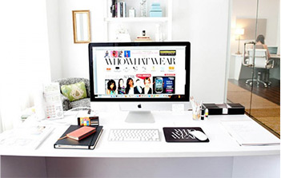

Сервис автоматического размещения рекламы в группах социальных сетей. Многофункциональный сайт по размещению, сопровождению, заработку, куьтивации и раскрутке. Для разработки потребовалось 2 месяца и 300 000 рублей. Дизайн делал отличный дизайнер.
В проекте были
использованы:
Проект «BidFox»

история
разработки
Будучи увлечёнными специалистами, воспринимающими информационные технологии как родную стихию, мы берём на себя задачи проектирования, создания, поддержки и модернизации качественной ИТ-инфраструктуры для веб-приложений в соответствии с современными подходами и принципами (Канбан, Agile, DevOps).
этапы работы
Наибольших успехов добиваются люди, по-настоящему увлечённые своей работой. Поддержание дружелюбной атмосферы, взаимопонимания и в меру «хакерского духа», включающего в себя склонность к красивым техническим решениям, — наша прямая и очень приятная обязанность. Во многом всё это удаётся благодаря тому, что основной коллектив сформировался ещё до официального появления компании — на базе одного государственного технического вуза. Проверенные люди с давно налаженными внутренними коммуникациями, высокая квалификация и нескончаемый энтузиазм — социальная база, которая помогает нам стремительно развиваться.
Наибольших успехов добиваются люди, по-настоящему увлечённые своей работой. Поддержание дружелюбной атмосферы, взаимопонимания и в меру «хакерского духа», включающего в себя склонность к красивым техническим решениям, — наша прямая и очень приятная обязанность. Во многом всё это удаётся благодаря тому, что основной коллектив сформировался ещё до официального появления компании — на базе одного государственного технического вуза. Проверенные люди с давно налаженными внутренними коммуникациями, высокая квалификация и нескончаемый энтузиазм — социальная база, которая помогает нам стремительно развиваться. Наибольших успехов добиваются люди. Поддержание дружелюбной атмосферы, взаимопонимания и в меру «хакерского духа», включающего в себя склонность к красивым техническим решениям, — наша прямая и очень приятная обязанность.
Наибольших успехов добиваются люди, по-настоящему увлечённые своей работой. Поддержание дружелюбной атмосферы, взаимопонимания и в меру «хакерского духа», включающего в себя склонность к красивым техническим решениям, — наша прямая и очень приятная обязанность. Во многом всё это удаётся благодаря тому, что основной коллектив сформировался ещё до официального появления компании — на базе одного государственного технического вуза. Проверенные люди с давно налаженными внутренними коммуникациями, высокая квалификация и нескончаемый энтузиазм — социальная база, которая помогает нам стремительно развиваться. Наибольших успехов добиваются люди. Поддержание дружелюбной атмосферы, взаимопонимания и в меру «хакерского духа», включающего в себя склонность к красивым техническим решениям, — наша прямая и очень приятная обязанность.
отзыв
клиента
”Наибольших успехов добиваются люди, по-настоящему увлечённые своей работой. Поддержание дружелюбной атмосферы, взаимопонимания и в меру «хакерского духа», включающего в себя склонность к красивым техническим решениям, — наша прямая и очень приятная обязанность. Во многом всё это удаётся благодаря тому, что основной коллектив сформировался ещё до официального появления компании — на базе одного государственного технического вуза. Проверенные люди с давно налаженными внутренними коммуникациями, высокая квалификация и нескончаемый энтузиазм — социальная база, которая помогает нам стремительно развиваться. Наибольших успехов добиваются люди.”
Директор по свзязям с общественностью М.В. Левинапроект показывает такие результаты
-
25 тыс.
Владельцев пабликов и прямых
рекламодателей -
10 млн.
сообществ
-
48 тыс.
Размещено
рекламных объявлений -
19.3 тыс.
Количество подписчиков
в сообществах -
500 млн.
Охват человек в сутки
-
512 000 руб.
Заработано
владельцами сообществ
проект показывает такие результаты
-
25 тыс.
Владельцев пабликов и прямых
рекламодателей -
10 млн.
сообществ
-
25.3 тыс.
Количество подписчиков
в сообществах -
500 млн.
Охват человек в сутки
- за сегодня
-
48 тыс.
Размещено
рекламных объявлений - за сегодня
-
512 000 руб.
Заработано
владельцами сообществ
хотите
больше
знать?
Наибольших успехов добиваются люди, по-настоящему увлечённые своей работой. Поддержание дружелюбной атмосферы, взаимопонимания и в меру «хакерского духа», включающего в себя склонность к красивым техническим решениям, — наша прямая и очень приятная обязанность. Во многом всё это удаётся благодаря тому, что основной коллектив сформировался ещё до официального появления компании — на базе одного государственного технического вуза. Проверенные люди с давно налаженными.
Во многом всё это удаётся благодаря тому, что основной коллектив сформировался ещё до официального появления компании — на базе одного государственного технического вуза. Проверенные люди с давно налаженными внутренними коммуникациями, высокая квалификация и нескончаемый энтузиазм — социальная база, которая помогает нам стремительно развиваться.
Наибольших успехов добиваются люди, по-настоящему увлечённые своей работой. Поддержание дружелюбной атмосферы, взаимопонимания и в меру «хакерского духа», включающего в себя склонность к красивым техническим решениям, — наша прямая и очень приятная обязанность. Во многом всё это удаётся благодаря тому, что основной коллектив сформировался ещё до официального появления компании — на базе одного государственного технического вуза. Проверенные люди с давно налаженными внутренними коммуникациями, высокая квалификация и нескончаемый энтузиазм — социальная база, которая помогает нам стремительно развиваться. Наибольших успехов добиваются люди. Поддержание дружелюбной атмосферы, взаимопонимания и в меру «хакерского духа», включающего в себя склонность к красивым техническим решениям, — наша прямая и очень приятная обязанность.
Что мы используем
публикации
о проекте
в сми
самый успешный интернет проект запущен в современной россии
Наибольших успехов добиваются люди, по-настоящему увлечённые своей работой. Поддержание дружелюбной атмосферы, взаимопонимания и в меру «хакерского духа», включающего в себя склонность к красивым техническим решениям, — наша прямая и очень приятная обязанность. Во многом всё это удаётся благодаря тому, что основной коллектив сформировался ещё до официального появления компании — на базе одного государственного технического вуза. Проверенные люди с давно налаженными внутренними коммуникациями, высокая квалификация и нескончаемый энтузиазм — социальная база, которая помогает нам стремительно развиваться. Наибольших успехов добиваются люди. Поддержание дружелюбной атмосферы, взаимопонимания и в меру «хакерского духа», включающего в себя склонность к красивым техническим решениям, — наша прямая и очень приятная обязанность. Во многом всё это удаётся благодаря тому, что основной коллектив сформировался ещё до официального появления компании — на базе одного государственного технического вуза. Проверенные люди с давно налаженными внутренними коммуникациями, высокая квалификация и нескончаемый энтузиазм — социальная база, которая помогает нам стремительно развиваться.
самый успешный интернет проект запущен в современной россии
Наибольших успехов добиваются люди, по-настоящему увлечённые своей работой. Поддержание дружелюбной атмосферы, взаимопонимания и в меру «хакерского духа», включающего в себя склонность к красивым техническим решениям, — наша прямая и очень приятная обязанность. Во многом всё это удаётся благодаря тому, что основной коллектив сформировался ещё до официального появления компании — на базе одного государственного технического вуза. Проверенные люди с давно налаженными внутренними коммуникациями, высокая квалификация и нескончаемый энтузиазм — социальная база, которая помогает нам стремительно развиваться. Наибольших успехов добиваются люди. Поддержание дружелюбной атмосферы, взаимопонимания и в меру «хакерского духа», включающего в себя склонность к красивым техническим решениям, — наша прямая и очень приятная обязанность. Во многом всё это удаётся благодаря тому, что основной коллектив сформировался ещё до официального появления компании — на базе одного государственного технического вуза. Проверенные люди с давно налаженными внутренними коммуникациями, высокая квалификация и нескончаемый энтузиазм — социальная база, которая помогает нам стремительно развиваться.
самый успешный интернет проект запущен в современной россии
Наибольших успехов добиваются люди, по-настоящему увлечённые своей работой. Поддержание дружелюбной атмосферы, взаимопонимания и в меру «хакерского духа», включающего в себя склонность к красивым техническим решениям, — наша прямая и очень приятная обязанность. Во многом всё это удаётся благодаря тому, что основной коллектив сформировался ещё до официального появления компании — на базе одного государственного технического вуза. Проверенные люди с давно налаженными внутренними коммуникациями, высокая квалификация и нескончаемый энтузиазм — социальная база, которая помогает нам стремительно развиваться. Наибольших успехов добиваются люди. Поддержание дружелюбной атмосферы, взаимопонимания и в меру «хакерского духа», включающего в себя склонность к красивым техническим решениям, — наша прямая и очень приятная обязанность. Во многом всё это удаётся благодаря тому, что основной коллектив сформировался ещё до официального появления компании — на базе одного государственного технического вуза. Проверенные люди с давно налаженными внутренними коммуникациями, высокая квалификация и нескончаемый энтузиазм — социальная база, которая помогает нам стремительно развиваться.
самый успешный интернет проект запущен в современной россии
Наибольших успехов добиваются люди, по-настоящему увлечённые своей работой. Поддержание дружелюбной атмосферы, взаимопонимания и в меру «хакерского духа», включающего в себя склонность к красивым техническим решениям, — наша прямая и очень приятная обязанность. Во многом всё это удаётся благодаря тому, что основной коллектив сформировался ещё до официального появления компании — на базе одного государственного технического вуза. Проверенные люди с давно налаженными внутренними коммуникациями, высокая квалификация и нескончаемый энтузиазм — социальная база, которая помогает нам стремительно развиваться. Наибольших успехов добиваются люди. Поддержание дружелюбной атмосферы, взаимопонимания и в меру «хакерского духа», включающего в себя склонность к красивым техническим решениям, — наша прямая и очень приятная обязанность. Во многом всё это удаётся благодаря тому, что основной коллектив сформировался ещё до официального появления компании — на базе одного государственного технического вуза. Проверенные люди с давно налаженными внутренними коммуникациями, высокая квалификация и нескончаемый энтузиазм — социальная база, которая помогает нам стремительно развиваться.
самый успешный интернет проект запущен в современной россии
Наибольших успехов добиваются люди, по-настоящему увлечённые своей работой. Поддержание дружелюбной атмосферы, взаимопонимания и в меру «хакерского духа», включающего в себя склонность к красивым техническим решениям, — наша прямая и очень приятная обязанность. Во многом всё это удаётся благодаря тому, что основной коллектив сформировался ещё до официального появления компании — на базе одного государственного технического вуза. Проверенные люди с давно налаженными внутренними коммуникациями, высокая квалификация и нескончаемый энтузиазм — социальная база, которая помогает нам стремительно развиваться. Наибольших успехов добиваются люди. Поддержание дружелюбной атмосферы, взаимопонимания и в меру «хакерского духа», включающего в себя склонность к красивым техническим решениям, — наша прямая и очень приятная обязанность. Во многом всё это удаётся благодаря тому, что основной коллектив сформировался ещё до официального появления компании — на базе одного государственного технического вуза. Проверенные люди с давно налаженными внутренними коммуникациями, высокая квалификация и нескончаемый энтузиазм — социальная база, которая помогает нам стремительно развиваться.
самый успешный интернет проект запущен в современной россии
Наибольших успехов добиваются люди, по-настоящему увлечённые своей работой. Поддержание дружелюбной атмосферы, взаимопонимания и в меру «хакерского духа», включающего в себя склонность к красивым техническим решениям, — наша прямая и очень приятная обязанность. Во многом всё это удаётся благодаря тому, что основной коллектив сформировался ещё до официального появления компании — на базе одного государственного технического вуза. Проверенные люди с давно налаженными внутренними коммуникациями, высокая квалификация и нескончаемый энтузиазм — социальная база, которая помогает нам стремительно развиваться. Наибольших успехов добиваются люди. Поддержание дружелюбной атмосферы, взаимопонимания и в меру «хакерского духа», включающего в себя склонность к красивым техническим решениям, — наша прямая и очень приятная обязанность. Во многом всё это удаётся благодаря тому, что основной коллектив сформировался ещё до официального появления компании — на базе одного государственного технического вуза. Проверенные люди с давно налаженными внутренними коммуникациями, высокая квалификация и нескончаемый энтузиазм — социальная база, которая помогает нам стремительно развиваться.